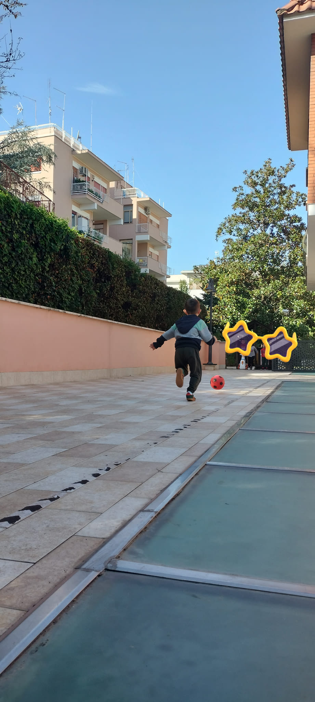
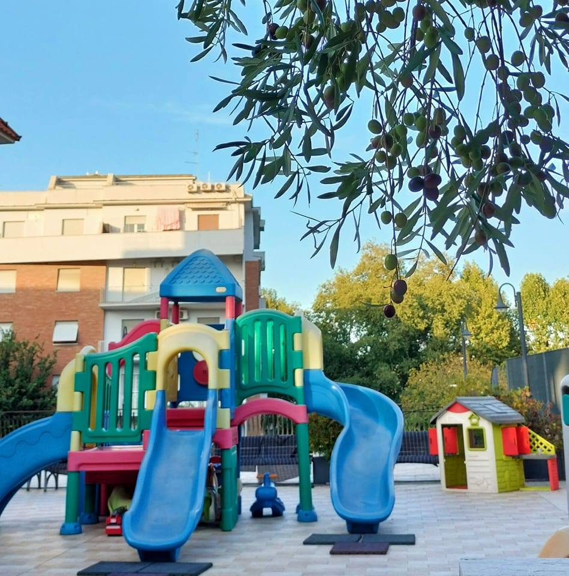

Roma
La Scuola dell'Infanzia Paritaria Sant’Orsola si inserisce nel contesto sociale esprimendovi una presenza connotata da libertà, pluralismo, autonomia, solidarietà e qualità educativa. Scuola di tradizione cristiana, essa continua a costruire "tradizione", divenendo espressione di novità e continuità, consentendo di operare in modo positivo ed efficace, nel rispetto della centralità del bambino, soggetto attivo che deve crescere, per conquistare autonomia e competenze e per realizzare pienamente se stessa e la propria identità umana e cristiana. Accogliamo bambini dai 3 ai 6 anni in un ambiente sicuro, educativo e ricco di esperienze. Il gioco, la relazione e la scoperta sono al centro del nostro progetto educativo.
Tratti caratterizzanti il curricolo e specifiche progettualità prOgEttO PSiCOMOTRiCITA ’ La psicomotricità relazionale è un’attività pensata a favore del bambino come un momento di crescita e di condivisione di emozioni e di vissuti in continua evoluzione raccontati attraverso il corpo in movimento in uno spazio e in un tempo ben definito e rassicurante per ciascuno di loro. Queste condizioni favoriscono lo sviluppo del movimento e la comunicazione non verbale, grazie alla quale il bambino apre il suo mondo interiore e lo rende condivisibile. Il gioco rappresenta una fonte di piacere e di opportunità in cui ogni bambino si sente libero di esprimersi, partendo spontaneamente da quello che sa fare, per raggiugere una maggior consapevolezza delle proprie competenze emotive-relazionali, corporee e cognitive. Attraverso l’uso della corporeità e degli oggetti presenti in sala i bambini acquistano più fiducia in loro stessi, stabiliscono una relazione empatica con l’altro, riflettono sulle loro azioni e allenano il proprio potenziale creativo valorizzando le loro risorse con un interesse maggiore verso il gioco. DAL MACROCOSMO AL MICROCOSMO: LABORATORIO DI LUDODANZA E FANTASIA MOTORIA Rivolto a bimbi di età compresa tra i 5 e i 6 anni LA LUDODANZA E LA FANTASIA MOTORIA La Ludodanza e la Fantasia Motoria sono discipline corporee che uniscono il gioco e la creatività ad esercizi strutturati di coordinazione motoria nello spazio e nel tempo per sviluppare armoniosamente propriocezione, senso del ritmo e cinestetico nei bambini. LA LUDODANZA E LA FANTASIA MOTORIA COME STRUMENTI EDUCATIVI Lo sguardo curioso e privo di condizionamenti di un bambino rivolto al mondo che lo circonda, sia quest’ultimo naturale o umanizzato, rappresenta un punto di osservazione privilegiato dal quale partire per sviluppare ascolto, capacità di discernimento, assertività e creatività. Elementi tutti che, sotto la guida dell’insegnante, vengono convogliati nel gioco e in esercizi strutturati che portano il bimbo alla scoperta del sé e del proprio corpo in modo assolutamente fisiologico. Il piccolo prende quindi consapevolezza della propriocezione, ovvero la capacità di sentire il proprio corpo nello spazio, e del senso cinestetico, ossia del movimento, e del ritmo, entrambi innati nell’essere umano. Si creerà così una connessione armoniosa col proprio “microcosmo” e al tempo stesso col “macrocosmo” rappresentato dagli altri e dal mondo. IL TEATRO EDUCATIVO L’esperienza artistica del teatro, se autentica, permette di andare oltre l’esperienza dei sensi, perché come riportava San Giovanni Paolo II nella sua “Lettera agli Artisti”, l’arte, in questo caso la recitazione, permette di fare esperienza anche di quello che non è fisicamente percettibile, poiché d’ispirazione divina. Il Teatro è un’opportunità, uno strumento privilegiato di crescita, di cambiamento, di inclusione sociale, di apertura alla vita a favore del singolo bambino e per la collettività, perchè aiuta a crescere e a migliorarsi grazie alla scoperta di se stessi, come ad esempio la scoperta e l’uso dei principali strumenti dell’attore: voce, corpo e spazio. Inoltre scoperta degli stati d’animo, delle abilità, delle incapacità, delle inesperienze, delle disabilità, del talento e di ciò per cui abbiamo predilezione se non addirittura distacco. Al contempo, la recitazione educa “al bello” attraverso i contenuti che prendono forma nella parola, nei suoni, nelle luci, nelle immagini, nei movimenti e nell’ambiente fisico che lo circonda costituito dalla scenografia, dagli oggetti e dai costumi di scena. Educazione alla bellezza diviene in un certo qual senso anche educazione a ciò che è bene, in quanto quest’ultimo viene visibilmente espresso dalla prima. Attraverso lo stile della commedia, quale mezzo ideale per imparare i tempi scenici e per giungere alla compassione mediante l’ umorismo , il bambino si orienta verso ciò che è bene, bello e buono educando cuore e mente e mettendoli a servizio dell’ ”altro” rappresentato dal pubblico. Inoltre, sulla scena il bambino sperimenta l’osservanza delle regole del teatro, l’autonomia, l’assunzione delle proprie responsabilità e lo stare in gruppo all’insegna della collaborazione, del rispetto reciproco e della presa a carico dei limiti del compagno in un’ottica di aiuto e in un quadro di corresponsabilità, oltre che di fratellanza, giugendo insieme in un clima di festa al risultato finale dove nessuno è umiliato, bensì incoraggiato e valorizzato. Il teatro svolto con le dovute accortezze e strategie aiuta il bambino a sviluppare la fantasia, ad impadronirsi dell’uso del linguaggio sotto forma di parole e di suoni “portati”, inoltre ad impossessarsi del proprio corpo attraverso posture e movenze tipiche dell’attore, dando origine nel tempo ad un maggior coordinamento ed espressione di sé, vincendo inutili paure per lasciare spazio all’autostima e ancor piu’ alla gioia. Arricchita da un sano umorismo utile per una sana accettazione della realtà e per un suo possibile cambiamento. Il teatro, inoltre, educa e stimola i sensi tra cui l’equilibrio, servendosi di tutto ciò che concorre alla messa in scena di uno spettacolo, dall’ambiente fisico ai contenuti, fino a giungere all’interazione con se stessi e con gli altri. La Scuola dell’Infanzia Paritaria “SANT’ORSOLA” intende coniugare quanto espresso nel Progetto Educativo delle Scuole dell’INFANZIA, che segue le Indicazioni Nazionali del 2012, per il Curriculum della scuola dell’infanzia del primo ciclo di istruzione, con l’ispirazione cristiana cattolica della Congregazione delle Suore Orsoline della Sacra Famiglia che conferma l’insegnamento della religione cattolica. PROGETTO EDUCATIVO: CON GLI OCCHI AL CIELO CON GLI OCCHI AL CIELO è un invito ad alzare lo sguardo per lasciarsi stupire e meravigliare. Il cielo è sempre lì, sopra le nostre teste eppure non gli diamo la giusta attenzione. E’ immenso, infinito, è dappertutto, ci sovrasta. Eppure ci sono giorni in cui neppure lo vediamo. Ma il cielo è sempre lì nei giorni bui e in quelli pieni di luce, nei giorni di tempesta e in quelli pieni di colori… Il cielo parlerà e si racconterà ai bambini attraverso i suoi colori e le sue sfumature in un viaggio fatto di parole, emozioni e sguardi. Sarà una programmazione in cui l’attenzione ai dettagli e il guardare il mondo da prospettive differenti con occhi nuovi permetterà ai più piccoli di accostarsi alla realtà, di leggerla, di interpretarla di viverla con SPONTANEITA’, CREATIVITA’ e IMMAGINAZIONE. Incontreremo cieli con l’abito da sera, cieli innamorati, cieli sereni, cieli in tempesta. Giocheremo con le stelle, seguiremo il cammino instabile delle nuvole lasciando volare la fantasia. La programmazione sarà in CONTINUO DIVENIRE. Saranno i bambini a guidarci in questo percorso. Noi per loro saremo REGIA, offriremo contesti e materiali avendo però chiaro finalità e obiettivi. Organizzeremo setting, solleciteremo e introdurremo il gioco attraverso gesti o ponendo domande, ci metteremo in ascolto per intercettare le loro esigenze. Sarà un viaggio quello che faremo in cui si valorizzerà il PROCESSO e non il PRODOTTO. Si incentiverà la curiosità, l'interesse, la motivazione all'apprendimento dei bambini attraverso un metodo di lavoro che predispone spazi, tempi e materiali in modo che il bambino possa liberamente scegliere cosa, come, quanto investigare "provocando" il mondo intorno a sé. Verranno offerte NUOVE POSSIBILITA' che permetterà loro di scoprire, conoscere il mondo e se stessi seguendo il proprio unico e personale stile di apprendimento, entrando totalmente nel momento presente e nel piacere del fare immergendosi nel processo stesso di scoperta, con il proprio ritmo e la propria individualità irripetibile.

Orario scolastico: 08:00 - 16:00
Post scuola: fino alle 17:30
Indirizzo: Via Monte Senario 83, Roma
Telefono: 06 8170232
Facebook:
Visita la nostra pagina